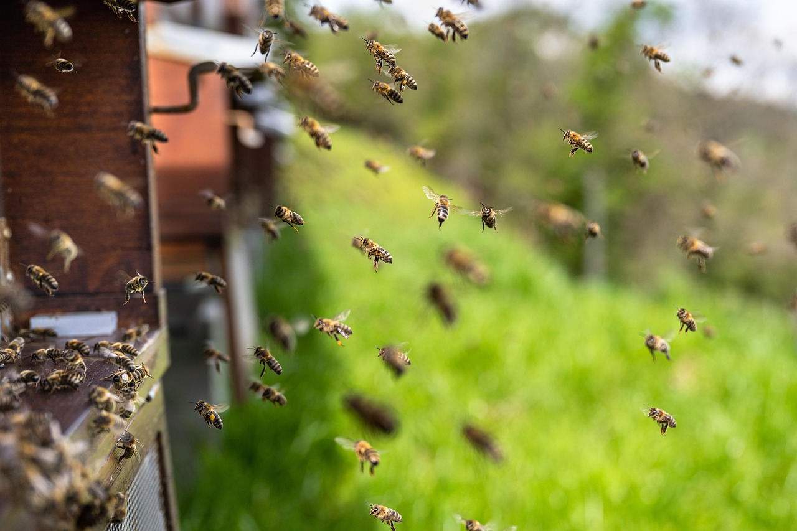
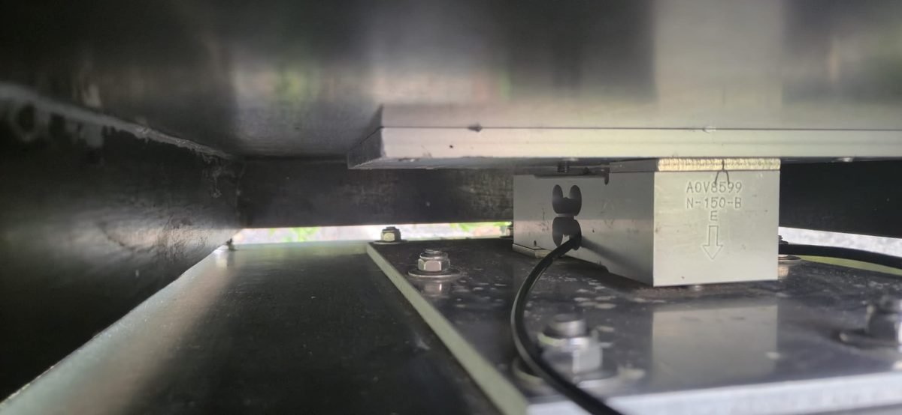
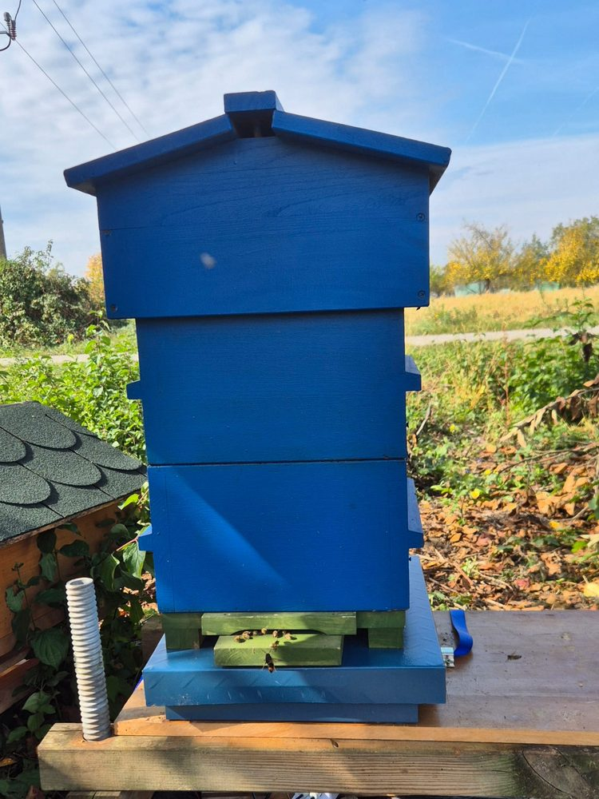

Seeed Studio
Seeed Studio تعرض TanenBase في ملخصها الشهري لشهر تموز 2026: “Edge AI Beyond the Blueprint”.
اقرأ المقال على Seeed Studioيزن TanenBase خليتك ويقيس حرارتها، ثم يرسل القراءات إليك لاسلكياً.
طقم بطاريات واحد يكفي لسنوات. لا اشتراك، لا رسوم، ولا شركة تستطيع إطفاء جهازك يوماً ما.
رخصة Apache 2.0 — مجاني للجميع، حتى للاستعمال التجاري. للأسئلة: info@tanen.eu

ليست رسوماً تخيلية، بل صور الأجهزة نفسها التي قيست بها أرقام هذه الصفحة.


جهاز TanenBase تحت خلية نحل في بول. ترسل المحطة عبر LoRaWAN إلى بوابة فوق قلعة فيندك على بعد نحو 4 كم، وتبعث قراءة كل ساعة.


كانت الجمعية من أوائل من استخدموا TanenBase، فنقلت المشروع من الورشة إلى المنحل.
طائفة نحل على طرف الحقول في فينترسدورف تقف على ميزان TanenBase المبني على منصة الوزن Steinberg SBS-PF-150. ترسل المحطة إلى بوابة re@di في وسط القرية على بعد كيلومتر تقريباً.



وزن هذه الخلية وحرارتها، منشوران على beelogger وBEEP.
منحلا بول وفينترسدورف يرسلان عبر شبكة LoRaWAN التابعة لـ re@di، وهي تحالف مدن بادن-بادن وبريتن وبروخزال وبول وإتلينغن وغاغيناو وراشتات وراينشتيتن وشتوتنزي. البوابات مفتوحة للجميع، بلا جهاز استقبال خاص ولا عقد اتصالات.
Seeed Studio تعرض TanenBase في ملخصها الشهري لشهر تموز 2026: “Edge AI Beyond the Blueprint”.
اقرأ المقال على Seeed Studioتقديم مشروع TanenBase على LinkedIn.
شاهد المنشور على LinkedInثلاثة أمور يتقنها: عمر طويل، قياس صادق، وإرسال لا يخضع لشركة.
بين قياس والتالي، الجهاز نائم عملياً. جهاز الإرسال لا يعمل حسب الساعة، بل حين يتغير الوزن أو الحرارة تغيراً واضحاً.
كل ميزان يتأثر بالحرارة. شمس الظهيرة ثم ليلة باردة، فيظهر كيلوغرام من الرحيق لم يكن موجوداً. يقيس TanenBase الحرارة معه ويصحّح هذا الخطأ.
تُرسل القراءات عبر LoRaWAN: تقنية لاسلكية للبيانات الصغيرة والمسافات البعيدة، بلا شريحة ولا عقد اتصالات. انصب جهاز استقبال خاصاً بك، أو استعمل شبكة مفتوحة مثل The Things Network.
حتى ثلاثة حساسات بلوتوث صغيرة تقيس الحرارة والرطوبة حيث يهم: اثنان داخل الخلية، وواحد خارجها. المحطة تقرؤها وترسل قيمها مع الوزن، بلا أسلاك داخل الخلية ولا جهاز استقبال إضافي.
حرارة الحضنة ورطوبتها تكشفان ما لا يقوله الميزان وحده: هل تربّي الطائفة حضنة؟ هل تحافظ على عنقودها في الشتاء؟ هل تتراكم الرطوبة؟

يرسل الميزان قراءاته عبر The Things Network. من هناك تنتقل إلى منصة تحليل مجانية مفتوحة، ترسمها منحنيات وتحفظ سجلك. منصتان جاهزتان ومجرّبتان في الميدان، بلا أي برمجة.
منصة مفتوحة من هولندا. الوزن والحرارة والبطارية كمنحنيات، مع دفتر خلية رقمي لكل طائفة. أنشئ حساباً، أدخل رقم الجهاز من الملصق، وانتهى الأمر.
مشروع ألماني للنحالين بخادم مجتمعي خاص. محطتك ترسل إليه القراءات نفسها، وحساب واحد يكفي لكل موازين المنحل.
المنصتان تستلمان الرسالة اللاسلكية نفسها، ولا شيء يتغير في الميزان. استعمل واحدة أو الاثنتين، أو اسحب القراءات إلى خادمك الخاص دون أن تسألنا.
موازين الخلايا تُباع جاهزة، لكن أغلبها ينتهي إلى الطرق المسدودة الأربعة نفسها. السبب ليس النحل، بل نموذج الربح.
الميزان الجاهز يكلف مئات اليوروات حسب الشركة، ثم المبلغ نفسه لكل طائفة إضافية. أنت لا تدفع ثمن حساس الوزن، فهو قطعة صناعية رخيصة، بل ثمن النظام المغلق حوله.
كثير من الأجهزة لا يعمل إلا بعقد ساري. ينتهي العقد، فيصمت الميزان ولا تعود السجلات القديمة متاحة، مع أن الجهاز في أرضك وملكك.
إذا أوقفت الشركة الخدمة أو خرجت من السوق، يصير الجهاز السليم خردة إلكترونية. لا أحد غير المصنّع يستطيع تحديث برمجيته، لأن أحداً غيره لم يرها.
جهاز يرسل كل ساعة، تغيّر شيء أم لا، يحتاج بطارية جديدة كل موسم أو لوحاً شمسياً مع حامله. كلاهما مشوار إلى المنحل كنت في غنى عنه.
قطع متوفرة في السوق، لا عقد، كل شيء منشور — وجهاز ينام معظم وقته.
لمن يحب التفاصيل. للاستعمال اليومي لا تحتاج إلى فهم أي منها.
| القراءات | الوزن، حرارة داخل الخلية، جهد البطارية |
|---|---|
| حساسات البلوتوث (اختيارية) | حتى 3 × SwitchBot Outdoor Meter: الحرارة والرطوبة، 2 داخل الخلية و1 خارجها |
| مجال الوزن | حتى 999 كغ |
| الدقة في الاختبار الميداني | نحو 12 غ تذبذب على مدى ستة أيام |
| الإرسال اللاسلكي | LoRaWAN الفئة A، EU868، OTAA |
| حزمة البيانات | 8 بايت لكل بلاغ، و5 بايت إضافية لكل حساس بلوتوث |
| الضبط | بلوتوث، وصفحة تحكم في المتصفح (Chrome أو Edge) |
| تيار السكون | نحو 4 ميكروأمبير (µA) |
| البطارية | ثلاث بطاريات ليثيوم AAA على التوالي (1.5 فولت، 1200 مللي أمبير ساعة) |
| العمر التشغيلي (حسابياً) | نحو 4.5 سنوات — قياس كل 15 دقيقة وبلاغ كل ساعتين؛ ونحو 10 سنوات بقياس كل ساعة وبلاغ كل 4 ساعات؛ ومع حساسات البلوتوث نحو 3.3 و7 سنوات |
| المعالج | Nordic nRF54LM20A، Zephyr / nRF Connect SDK |
| الرخصة | رخصة Apache 2.0 |
الانفتاح هنا لا يعني ورقة مواصفات للتنزيل. يعني أن بين يديك كل ما يلزم لتبني الجهاز بنفسك، تفحصه، تعدّله، وتعطيه لغيرك.
البرمجية، المخطط الكهربائي، ملفات اللوحة، دليل التركيب، وسلاسل القياس الكاملة لتصحيح الحرارة — حتى المواضع التي يظهر فيها العتاد ضعيفاً. من أراد التحقق من الأرقام يستطيع ذلك.
العلبة تُفتح، البطارية عادية، والقطع تُشترى منفردة. التبديل يحتاج مفك براغي وأحياناً كاوية لحام، لا شحن الجهاز إلى المصنع.
المحطة ترسل إلى جهاز الاستقبال أو الشبكة التي تحددها أنت. لا وسيط يقرأ بياناتك، ولا خدمة يتعلق مصير سجلاتك ببقائها.
رخصة Apache 2.0 تسمح لأي شخص باستعمال TanenBase وتعديله ونشره — تجارياً أيضاً، بلا رسوم ولا استئذان. تحسينات النحالين تعود إلى المشروع.
تريد بناء محطة؟ محتار في اختيار القطع؟ تود تجربة المشروع في جمعية النحالين عندك؟ تكفي رسالة بريد إلكتروني. نجيب بالألمانية والإنكليزية والعربية.
info@tanen.eu